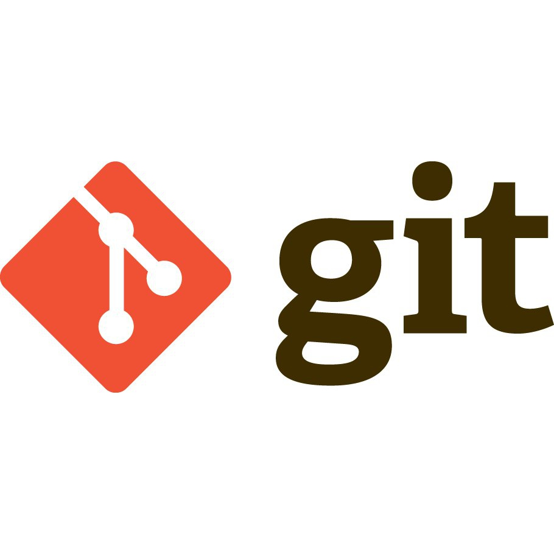

Git es un software de control de versiones diseñado por Linus Torvalds, pensando en la eficiencia, la confiabilidad y compatibilidad del mantenimiento de versiones de aplicaciones cuando estas tienen un gran número de archivos de código fuente.
Las características básicas de rendimiento de Git son muy sólidas en comparación con muchas otras alternativas. La confirmación de nuevos cambios, la ramificación, la fusión y la comparación de versiones anteriores se han optimizado en favor del rendimiento. Los algoritmos implementados en Git aprovechan el profundo conocimiento sobre los atributos comunes de los auténticos árboles de archivos de código fuente, cómo suelen modificarse con el paso del tiempo y cuáles son los patrones de acceso.
